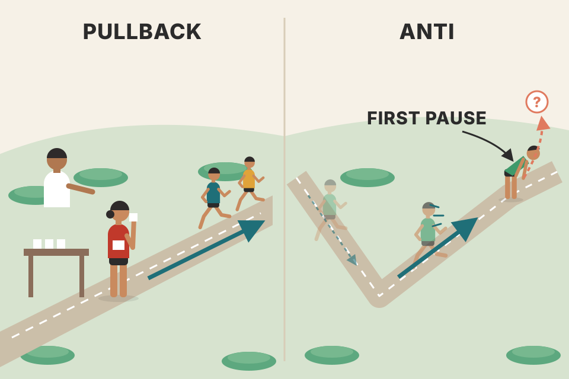
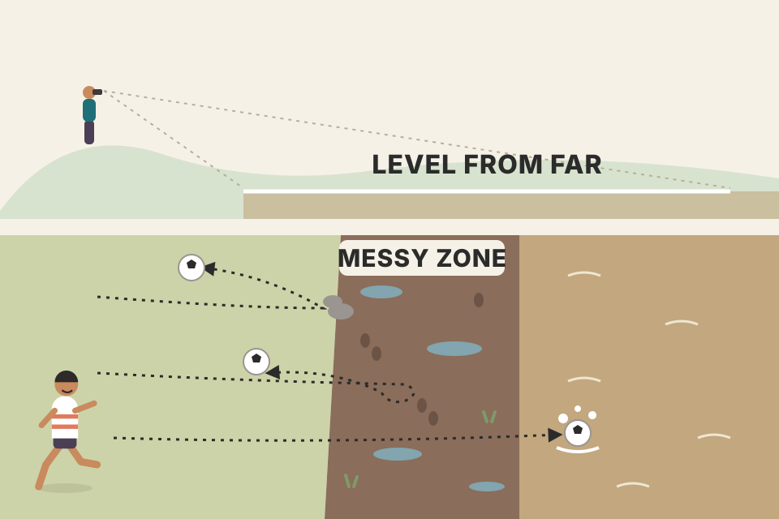
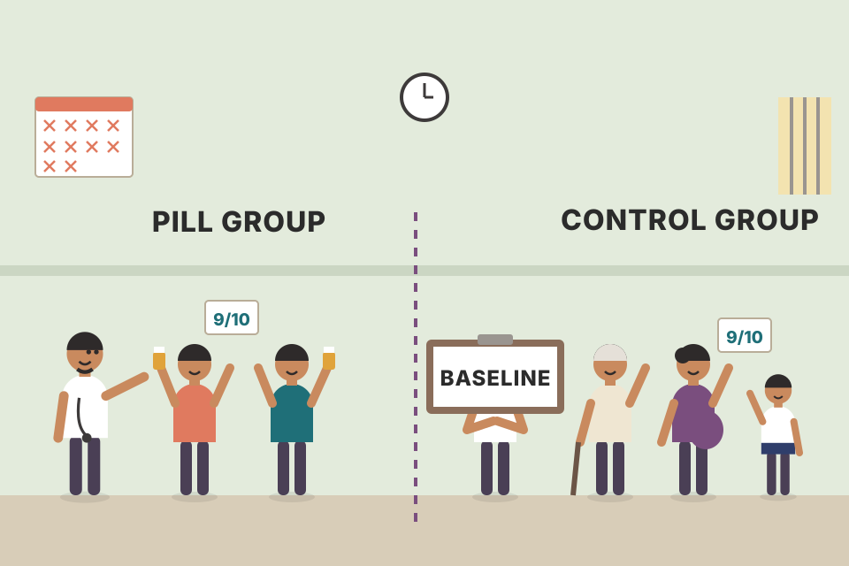
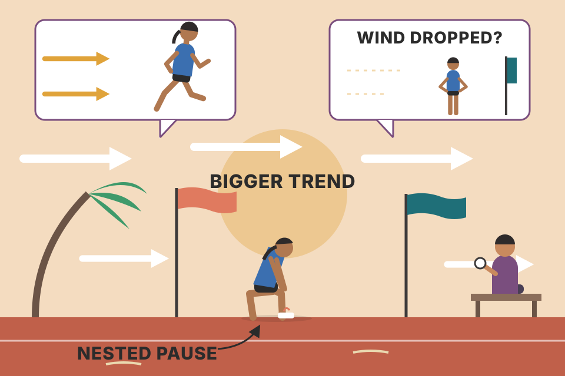

Module 5 looks like one trading pattern, the Anti. Most of its pages are really about a harder skill: checking whether a pattern, a level or a famous signal has any edge at all. You'll test the Anti, poke at support and resistance with random lines, find the bug in a famous "first day of the month" statistic, and run Grimes' Death Cross study yourself. Every chart uses simulated prices built to show one idea. They are not market evidence, and they're not Grimes' data. Where the page quotes Grimes' real numbers, it says so.
The module has two halves. The first half is homework: test a pattern and study levels. The second half is a set of Grimes' blog essays that teach you how to judge any test, including your own.
Grimes introduces a new pattern, the Anti. There are several ways to define it. The clearest: it's the first pullback after a possible trend change, or sometimes a pullback inside a trading range. Like any pullback, it has to be set up by strong momentum. Only the surrounding structure is different; the pattern itself is just a pullback.
The module's course videos (not in this workbook) covered three more things: an event study of how price acts around moving averages, quantitative support for the "two forces" model (mean reversion and momentum; the workbook's Chapter 16 covers it in writing), and cognitive biases. This is the only psychology-focused chapter before Module 9, which is all psychology. Biases matter here because the module studies support and resistance, where your eye fools you easily.
Grimes warns that the module is short on pages but long on work. The support-and-resistance studies are meant to lay a solid foundation for reading price action and market structure.

A classic pullback is a runner pausing for water in the middle of a race. An Anti is a runner who was jogging downhill, suddenly sprints uphill, and then pauses for the first time. The pause is the same kind of pause; what's new is that the direction may have just changed.
A strong counter-trend thrust says the side that was in control may have lost it. The first pullback after that thrust is the first chance to join the new side at a better price, with a clear place to be wrong (below the pullback). It's riskier than a classic pullback because the new trend is only a "potential" one; the old trend may simply resume.
Last module you backtested the classic pullback, a counter-trend move inside an established trend. Now test the Anti: a pullback that comes after a potential trend change, which shows up as strong momentum against the existing trend. Antis are rarer than standard pullbacks, which makes sense because they're a subset of them.
Before testing, write down your answers to four questions:
Then run a bar-by-bar backtest in the same style as the pullback test. The goal is twofold: train your eye to see the pattern, and get a sense of how much edge there might be in the pattern and in your specific definition of it.
This workbook doesn't give Grimes' own mechanical rules for the Anti; they're in the assigned reading of his 2012 book (section 06). The rules below are my answers to his four questions so you can test something concrete. The indicators are the chart settings Grimes says he uses (Ch.1, pdf p15): Keltner channels 2.25 ATRs around a 20-period EMA, and a modified MACD built from simple averages, 3-10-16, no histogram. How he averages the ATR isn't stated; I use a 20-bar simple average of the true range.
The run-up to the setup is drawn by hand (waypoints plus noise) so the shape is clear. Everything after the entry bar is a pure random walk from the current seed, so the outcome is a coin toss. Roll a new market and the same setup sometimes wins and sometimes loses. That's normal.
This is the exercise itself. The future is hidden. Step forward one bar at a time. When you think you see an Anti (or anything else), press Long or Short. The stop goes 1.5 ATR away and the target 3 ATR away (2R). The log keeps score in R.
On a random walk no rule can have an edge: tomorrow doesn't depend on today. So the Anti's average R lands near zero, the same as random entries with the same stop and target. That's the honest baseline a real-data test must beat. Now pick "trend regimes built in": each simulated market drifts up or down (0.3% a bar) and keeps that direction until a random flip (2% chance a bar). A strong thrust against the old trend is now often a real regime change, and the Anti's average R rises well above zero and usually above random entries (rerun with new markets to see how much the gap moves). Random entries drift above zero too, because in a trending market a 2R target gets reached more often than a 1R stop. The test isn't magic: it can only find structure that's in the data, and these regimes were put in on purpose.
Exits use the simulated path inside each bar: a stop fills at the first price at or beyond it, so gaps through the stop cost you. Checking only bar highs and lows and assuming perfect fills at the stop added about +0.12R per trade on this data when I first wrote it; that is another way a backtest flatters itself.
backtest_results_summary.md: the weekly pullback "beat all 20 random-entry runs". That's the same random-entry baseline as the table above, and it's why that result deserves more trust than a raw win rate.Treat this as exploration and training for your eye. The question: how do markets react around support and resistance? When price comes down to a possible support level, four things can happen:
Mixes are possible. Example: price pushes well below support, sits on it for a while, then rallies hard. That's rejection, but slow rejection. Decide for yourself how you'll label each case.
The exercise: find places where price worked around support or resistance. You can pick spots in the middle of a chart; you don't need to go bar by bar here. A good trick is to find a level on one timeframe and then look at the same area on a lower timeframe. For each area, ask: was it one precise price or a wide zone? Did price touch it many times or once? Did anything happen there (think of chart stories)? Did the bars' range or volatility change? Overall, how would you describe the action?
Grimes' example (Russell 2000 futures, daily chart next to a 5-minute chart of the same area): price met the level several times. It acted like a wide zone, not a single price. There were big pushes through it, and in real time you might well have thought the level was failing. In the end it held, with rejection, but only after a lot of time and work at the level.

A level is less like a wall and more like a muddy riverbank. Sometimes the ball bounces off cleanly, sometimes it sinks in and climbs out slowly, sometimes it rolls straight into the river. The zoom view is like walking up to the bank: the clean line you saw from far away turns into a messy strip of ground.
A level is where buyers and sellers who remember an old price may act again. They don't all act at the same tick, so the "level" is really a zone, and each pass through it shows who's winning. The readout counts what your eye should look for: how many separate visits, how long price stayed, how far it pushed through, and whether bars got bigger or smaller inside the zone (volatility change). Widen the zone and watch the count of visits change; the answer depends on your definition. That's why Grimes calls the exercise deliberately subjective. Doing many of these leaves you with more respect for how volatile and random price action is.
tori_trendlines_explained.md: Break vs Bounce at a line is this same hold-or-fail question; your tests found Break worked on daily and Bounce failed.Exercise 1: Action around levels. Find support and resistance on charts, in any way you like. One way: let the market make important pivot highs and lows, then see what happens when price comes back to them. Another: find an area where a level is working and zoom in, perhaps on lower timeframes. Keep some notes; it's fine to simply label each level as holding or breaking. Screenshots help: over time you build a library of patterns and their variations.
Exercise 2: Random lines on charts. The worry with exercise 1 is that it may train a cognitive bias: any line drawn on a chart looks important. Grimes says you have to see this yourself to believe it. Take at least 20 charts and draw random lines on them. Ways to make the lines truly random: hide the price bars (set them to the background colour) while you draw, or draw on a higher timeframe and then zoom into a lower one. Lines can be flat or sloping. Some won't touch price. Every time price comes near a line, pretend the line matters and study the action exactly as you did for the "real" levels.
After a while you'll likely be suspicious of support and resistance in general, and of calculated levels in particular. Grimes names floor-trader pivot levels (S1, S2, R1, R2…) and asks the key question for anyone using levels: are they any better than random ones?
Exercise 3: Statistical analysis (harder). Define levels somehow; a mix of calculated levels (ratios, pivots) and levels from clearly visible chart points is interesting. Move through the chart bar by bar and see what happens as price meets each level. Work hard to avoid information leakage: don't let future prices slip in; use only what you'd have known in real time. Make mock trades at each level and record the returns for each of several days after. That's a manual event study. If you can program, code a system that enters on a chosen bar and produces statistics like those shown in the course.
For each kind of level, every time price comes within 0.25 ATR of it from one side, I record a "touch" and look at the next 5 bars. Held = a close at least 1 ATR back on the side it came from, before any close 0.5 ATR through the level. Broke = the opposite came first. Levels compared: random flat lines; 5-bar swing pivots used only after they're confirmed (5 bars later); classic floor pivots P = (H+L+C)/3, R1 = 2P − L, S1 = 2P − H from the previous 20 bars; and the same swing pivots with leakage, used from the bar right after the pivot, before anyone could know it was a pivot.
On a random walk, random lines, swing levels and pivot levels all "hold" at about the same rate, because nothing in the data knows where the lines are. Your eye still sees bounces at every one of them: that's the bias exercise 2 is built to expose. Now look at the leakage row. A swing high is only known once 5 lower bars have printed. If you use it from the very next bar, you've quietly told the test that price won't close above it for a while, and "held" jumps for no real reason. That is information leakage in one line of code.
tori_trendlines_explained.md uses 5-bar pivots. A 5-bar pivot is confirmed 5 bars late; any test of it has to respect that delay.Hand charting is still valuable, and this is the last module with an explicit reminder to do it. Think about how, or whether, you'll keep the habit in your trading, training and analysis. Module 1 listed several ways to do it; the details matter much less than actually doing it.
It shouldn't eat your day. A few minutes every day (but every day), or a few minutes each hour if you trade intraday, builds a deep feel for price action. You can drop the exercise, but come back to it whenever you feel out of touch with the market or after time away from trading. Writing prices down and charting them by hand connects you to the flow of the market in a way that's hard to get otherwise.
Copying a map by hand versus glancing at it on your phone. After you've drawn the streets yourself, you remember which roads bend and which are long and straight. Writing down each open, high, low and close does the same for bar ranges, gaps and closes near the high or low.
Slow, active attention. Typing four numbers and drawing one bar makes you notice its size compared with recent bars, where it closed in its range, and whether it broke the prior bar's high or low. The guessing buttons are a bonus check: on this simulated random walk your hit rate should hover around 50% however good your feel gets. On real charts, a hit rate that stays near 50% is the "mostly random" truth of section 07.
The assigned pages are from Grimes' earlier book, The Art and Science of Technical Analysis: Market Structure, Price Action, and Trading Strategies (Wiley, 2012). That book is not this workbook and isn't in your library (the PDF file named after it is this workbook).
| Pages (printed, 2012 book) | Topic | Where it lands on this page |
|---|---|---|
| 170–173 | The Anti | section 02 |
| 327–336 | Anti examples | section 02 |
| 353–359 | Cognitive biases | sections 04, 11 |
| 409–424 | A deeper look at the MACD and moving averages | sections 02, 11–12 |
A blog post written as "what I've learned in the past 10 years". Writing his book sharpened the list, and the list was a big reason he wrote the book: he saw many people struggling to learn trading. There's no single right way to trade, but the ways that work line up with a few basic truths. His list:
A casino's roulette edge is under 3%, yet the casino always wins over a year, because it plays millions of spins. A trader with a 52% coin plays a few hundred times a year. Over that few hundred, luck is louder than the edge.
Each simulated trade wins or loses 1R. With win rate p, the average per trade is 2p − 1 (0.04R at 52%) and the spread per trade is about 1R. Luck shrinks only like 1/√N, so you need roughly N ≈ (2 ÷ (2p − 1))² trades before the edge stands two standard errors above zero: about 2,500 trades at 52%. Slide to 200 trades and see how many no-edge traders finish ahead, and how many real-edge traders finish behind. That is "edges are very small" in numbers.
A simple growing-perpetuity value: V = next year's cash flow ÷ (r − g). Cash flow 100, growth g = 5%.
With r = 9%, V = 100 ÷ 0.04 = 2,500. At r = 10%, V = 100 ÷ 0.05 = 2,000, a 20% lower value from a one-point change. That's the wiggle room Grimes means.
backtest_results_summary.md: "break-even win rate p* = (L + c)/(W + L): every losing run had a win rate below its p*". Costs make a small edge even smaller.Market statistics are everywhere, and they're cheap: anyone with a spreadsheet can tell you some week "has been up 9 times out of the past 7 years". Many such stats are false or misleading, and trading on them can hurt you.
A popular claim: a weak first day of the month (or quarter) means a weak month. Grimes first rebuilds the experts' numbers on the S&P 500 cash index back to 1961, 657 months:
| months | as the "experts" compute it | corrected (section 10) | |||||
|---|---|---|---|---|---|---|---|
| avg month | % months up | p | avg month | % months up | p | ||
| all months | 657 | 0.63% | 59.1% | — | 0.63% | 59.1% | — |
| day 1 up | 370 | 1.29% | 64.9% | 0.015 | 0.49% | 57.8% | 0.584 |
| day 1 down | 287 | −0.21% | 51.6%* | 0.006 | 0.55% | 58.9% | 0.777 |
Grimes' numbers, pdf p190–191, rearranged. Standard deviations of monthly returns were 3.96–4.49% in every group (all months 4.27%). *The text says 51.2%; the table prints 51.6%.
The first set looks like a huge edge, and that's the first warning: when something looks like a statistical home run, you've probably made a mistake. Step one is to ask whether it makes sense. Maybe managers put money to work early in the month and that carries through? Possible, but there's no clear logic. Then it gets stranger: day 2 shows the same effect, and day 3, and day 4. Whichever day you pick, if it's up the month tends to be up. Nobody can argue that managers put money to work on day 17. So the problem must be in the method.
Grimes knew a trader whose system "worked" statistically on any day of the month, quarter or week, even any hour of the day. He traded it live for about a decade and lost a lot of money: high seven figures on that one system. He kept returning to it because of bad statistics: every way he looked at it, except the right way, the results looked amazing. For traders, statistics aren't academic. They're how we understand the market, and bad statistics lead to bad decisions that cost money.
The corrected numbers show no effect: whether day 1 (or any day) is up or down tells you nothing about the rest of the month. No tradable edge, unless the test missed something; stay humble. Grimes' hint for finding the bug: what is a monthly return? His two aims from here: show how easily future information leaks into a study and how even a small bias distorts it, and offer one simple check that catches all errors like this. He has seen the same mistake in stats about moving average crosses, seasonality, trend indicators, buying or selling at 52-week highs, the January effect and many more.
The simulation makes 657 months of 21 independent random days each (average day +0.03%, spread 0.93%, so months average about 0.63% with a spread near 4.3%, like the S&P). By construction no day predicts any other. Yet the "naive" bars are tall for every day of the month, just like Grimes found, while the "tradable" line (return from that day's close to month end) sits near zero. The month's return contains the day you sorted on, so sorting on it pre-loads the answer. A 1% up day adds 1% to its month. Section 09 makes this physical with cards.
For each group I use a two-sample t-test: the group's mean against the other group's mean, with Welch's standard error √(s₁²/n₁ + s₂²/n₂) and Student-t tail probabilities. Grimes doesn't say exactly which test he ran, so my p-values are the same kind of number, not a copy of his method.
Grimes recasts the bug as a day-of-the-week effect. On the S&P 500 cash index since 1962 there are 2,856 weeks; the average week returned 0.15%, with a standard deviation of 2.14%, and 56.1% of weeks were up. Then the (wrong) conditional stats: when any given weekday (Monday to Friday) was up, its week averaged about +0.79% to +0.85% and was up about 70–71% of the time; when that day was down, the week averaged −0.50% to −0.76% and was up only 37–43% of the time. Every one of those results had p = 0.0000. An effect that strong is again a warning sign.
Market data is abstract, so think of physical things. Make each week a card. The front has five boxes, the five daily returns. The back has one number, the week's return. (Strictly you must compound returns, not add them, but adding is close enough here.) Put all 2,856 cards in a bag and draw some: each box is about as likely to be up as down. Look at a lot of cards and you'd see days are up a bit more often, about 52.7% of the time.
Now dump the cards on the floor and sort them on one thing: if box 1 is positive, the card goes left; if negative, right. The sorting itself guaranteed that every card on the left has at least one up day. Flip them over and average the backs: the left pile is mostly up weeks, the right pile mostly down. With one day in five forced positive, the week is pushed positive. That sounds like a small push, but market data is random enough that a light thumb on the scale distorts results badly.
Grade students by their total exam score, but first split them by whether they got question 1 right. The "got Q1 right" group scores higher on average, partly just because Q1 is part of the total. That doesn't mean Q1 predicts how they did on the other questions.
Week return = box 1 + boxes 2–5. Sorting on box 1 changes box 1's average a lot (about +0.75% in the left pile, −0.75% in the right) and boxes 2–5 not at all. With a weekly spread of about 2%, a 0.75% shift in the average is enough to move the "% weeks up" from the mid-50s to around 70% or down to around 40%. In the two simulated pile boxes, compare "rest of the week (boxes after the sorted one)": it's the same in both piles. That is the real, tradable answer, and it's nothing.
Grimes' standard for any test: always ask how you could have traded the effect. A weekly return means buying or selling at Friday's close and getting out at the next Friday's close (except in short weeks). That's the only way a trader captures it. But you can't know whether to buy or sell on Friday until you've seen what Monday does. The trade is impossible, so the statistic is suspect.
A tradable test defines the week in one of two ways: from the close of the day being examined to the next Friday, or as a rolling week, always 5 trading days out. For the monthly version, measure from the close of the day examined to the end of the month. A test like that finds no bias. His comparison for Monday:
| definition of "the week" | Mon up: avg week | % up | p | Mon down: avg week | % up | p | |
|---|---|---|---|---|---|---|---|
| Friday close → Friday close | 0.82% | 70.1% | 0.0000 | −0.50% | 42.5% | 0.0000 | needs a time machine |
| Monday close → Friday close | 0.11% | 56.5% | 0.5853 | 0.27% | 57.6% | 0.0606 | could trade |
Grimes' numbers, pdf p195, rearranged (standard deviations 1.80–2.10%).
It's a sneaky error; Grimes says he has made it many times himself. The "could I have traded it on this timeline?" test works, but needs careful thought because the mistake isn't always obvious. Be ruthless about the information you use, and even more watchful of your own thinking.
Every test has two clocks: when the information becomes known, and when the trade starts. The trade window must start after the information is known. In the leaky version the window starts on Friday but the signal arrives Monday evening, so the arrow points back in time. The table above it runs both definitions on the simulated cards from section 09.
backtest_results_summary.md flags survivorship bias in momentum rotation (35%/yr in the backtest vs 14.6%/yr for the real index since Oct 2020). Using today's Nifty 200 list for past dates is future information too: you couldn't have known in 2016 which stocks would be in the index now.A recurring theme in Grimes' work: most technical tools most people use show no real edge. The media love four: a market "finding support" at its X-day moving average, the "Hindenburg Omen", and the "Death Cross" and "Golden Cross". All are easy to explain, easy to show on a chart, and mostly have catchy names. All have, at best, questionable statistical significance.
The trigger: a news story said the Russell 2000 was near a Death Cross, describing the 200-day average breaking through the 50-day "on the upside" and calling it a key technical level that may signal a bear market. Grimes notes it's more accurate to say the 50-day breaks below the 200-day, and he sets aside the problem of trading an event before it happens. The key question: is it really a key level?
The test. Russell 2000 cash index, 6/24/1988 onward (the text says 6,613 trading days; the tables say 6,552 days): 19 Death Crosses. Take every event and measure what the market did afterwards. Decide how far to look, at which spots, and with what measure. He uses 5, 20, 60, 125 and 252 trading days, about a week, month, quarter, half year and year. (The text says 90 days; every table says 125.) It's not exhaustive: a weird event 20 days after one cross could distort day 20 while days 19 and 21 look different. But a range of windows beats the common habit of quoting one period, which should always make you ask why only that one.
Compare with the baseline, not with zero. "Up x% after the event" is a faulty analysis. The right statement is "x% above or below its baseline return after the event": the conditional move minus the market's normal, unconditional move. Comparing with zero is valid only if the market's average return is zero. The Russell's isn't: after any day, it was up on average 0.20% a week later and 10.06% a year later.
| excess return vs baseline (event mean − all-days mean) | events | 5 d | 20 d | 60 d | 125 d | 252 d |
|---|---|---|---|---|---|---|
| Russell 2000, Death Cross | 19 | −2.12% | −1.32% | −1.17% | +2.10% | +1.93% |
| Russell 2000, Golden Cross | 19 | −0.30% | −0.83% | −1.82% | −1.97% | +2.15% |
| DJIA (from 7/8/1925), Death Cross | 56 | −0.05% | −0.51% | +0.37% | −0.35% | −3.66% |
| DJIA (from 7/8/1925), Golden Cross | 56 | −0.09% | −0.58% | −0.78% | −1.19% | −1.62% |
| spread of all-days returns, Russell (DJIA) | 2.84 (2.56) | 5.61 (5.22) | 9.90 (9.24) | 14.02 (13.32) | 19.17 (20.35) |
Grimes' "Diff of Means" rows, pdf p198, p199, p201, gathered in one table. Russell data run to 9/18/14, DJIA to 9/19/14. The DJIA rows belong to section 12.
Russell result. A week after a Death Cross the index was down 1.92% on average, 2.12% worse than its baseline: a significant short-term sell signal. The effect then decays. A year out, the spread of returns is over 15% (15.88% after events) against a small +1.93% difference. So: a statistically significant, very short-term sell signal in this data, strong for a week, with no longer-term meaning. Then he flips the test to the Golden Cross (50-day crossing above the 200-day): no significant effects at all. That doesn't kill the test (an effect needn't be symmetric), but it calls for more study. A valid-looking signal can appear by pure chance, so repeat on other assets and timeframes. Looking at each event can deepen your understanding, but too much of that invites curve fitting: seeing what you want to see. A summary test is a blunt, rough summary that can miss detail.
Why do people care about meaningless tools? Probably cognitive bias. One of the biggest one-week selloffs after a Russell Death Cross came in 2008; anyone who saw it remembers it with emotion. And the signals can look very convincing on a chart (his example: a Russell chart from 1990–92 with a Death Cross before a drop and a Golden Cross before a big rally). Finding a few charts like that is just choosing good examples. Traditional technical analysis is visual, not quantitative, so analysts fall into this even with good intentions. The only defence is statistics. For the Death Cross, there's no reason to focus on it, and no sign of long-term significance.

A doctor who says "patients who took my pill were alive a year later" hasn't told you anything until you know how many patients who didn't take it were alive. The baseline is the control group.
The simulated index is a random walk with drift, scaled to the Russell's numbers (about +10% a year, daily spread about 1.2%). It can't have a real cross effect. Yet with only a dozen or two events per history, the event table often shows big excess returns and sometimes small p-values, and the cherry-pick button always finds a scary-looking example. Run 200 indexes: around 5% or more of them show a "significant" 5-day effect at p < 0.05 by chance alone (more than 5% because overlapping windows and clustered events make the t-test overconfident). One Russell result with 19 events is exactly the kind of result that needs repeating on other markets.
If the events were independent, the standard error of the event mean is s ÷ √n. Russell Death Cross, 5 days: s = 4.08%, n = 19 → SE = 0.94%; t = −2.12 ÷ 0.94 ≈ −2.3; p ≈ 0.04. At 252 days: s = 15.88% → SE = 3.64%; t = 1.93 ÷ 3.64 ≈ 0.5; p ≈ 0.6. That matches his reading: a short-term effect, nothing a year out.
Caveat: windows longer than the gap between events overlap, and events cluster, so the real uncertainty is larger than this. Treat these p-values as optimistic.
backtest_results_summary.md: weekly MACD made 11–16%/yr "but below just holding the stocks", and "random buy weeks with the same sell rule did as well". That is Grimes' baseline test, run by you.Nineteen Russell events is a small sample, so Grimes reruns the test on the Dow Jones Industrial Average from 7/8/1925 to 9/19/14: 22,345 days, 56 Death Crosses and 56 Golden Crosses (excess returns in the table in section 11). With more data the picture changes: no effect at all. Curiously, excess returns for both crosses are mostly negative. None of these numbers is statistically significant, so it's probably noise. Conclusion: probably pay no attention to the crosses.
Caution: more may not be better. More data meant going further back in time, and old data may not reflect today's market; something, or many things, may have changed. Every analysis assumes the future will look something like the past. Here it seems reasonable that any effect would be fairly stable, but that's an assumption worth checking each time.
Crosses on individual stocks. Stocks may behave differently from indexes, and a basket gives more events. He tests 100 stocks over the past 10 years, looking 1 to 20 trading days after each event: 371 buy signals (Golden Crosses) and 377 sell signals (Death Crosses) out of 125,849 bars (about 0.3% of bars each). Focus on the excess return (signal mean minus baseline mean) and the p-value.
The negative tilt echoes the DJIA result and is mostly an artifact: in stocks, the big returns ("the juice") come at the extremes. A moving-average crossing tends to happen when price is in the middle of its recent high-low range, so tests that pick middle-of-range events naturally show some underperformance. Most importantly: no clear, strong effect.
Caution: sample sizes with individual stocks. 125,000 daily bars sounds like a lot, but stocks are highly correlated. Many events were driven by the broad market and happened on or near the same dates. Don't be fooled by big sample sizes: assume such tests are less powerful than the raw count suggests.
A look at statistical significance. Tests of technical patterns rarely report it. Ask someone selling a candlestick pattern "what's the p-value?" and you'll get blank stares: that kind of testing usually isn't done in technical analysis, and traditional analysts don't think that way. All market data carries a lot of noise. A test tries to tease a real effect out of that noise, so we must separate what may be real from what is random. Buy on five random days in a year and there's some chance all five make money. The critical question is how sure we can be that results, good or bad, are more than randomness: what if we just got lucky? A significance test weighs the effect size, the variation, the sample size and so on, and answers that within the bounds of probability (stay humble; nothing is certain). The answer is often a p-value: the probability of seeing a result at least as extreme as the one observed purely by chance. (Formally, "given that the null hypothesis is true"; in market work the null hypothesis is usually that the effect is random.) Without it, "X was up Y% after the event", "stocks rallied Z% after the secret signal" or "this system won N times in ten years" mean little.
Surprise: a hidden gem. Look at the stock table's Up and Down columns: the share of stocks up or down on each day after the event, ignoring size. Baseline: 50.6% up, 1.02% unchanged, 48.38% down. After the Death Cross (sell signal) stocks were up 55–61% of the time (55.44% on day 1, 60.74% on day 10). After the Golden Cross, up only 46.90% on days 1–3. The cause is mean reversion, a powerful force in individual stocks, almost overwhelming on some timeframes. Think about the move needed to make a Death Cross: price is almost always falling, dragging the short average through the long one, and the event day almost always closes lower than the day before. Simply buying stocks after a lower close wins slightly in tests, because of mean reversion. That's also why quantitative trend-following systems struggle with individual stocks.
Grimes asks you to check your own trading: what happens when you chase entries? How many breakouts fail? How many breakout trades snap back if you enter on a strong day in the breakout's direction? What do your statistics say? The famous crosses had no effect, but the test uncovered a basic principle of price behaviour, which is not a bad day's work.
Three separate mechanisms. Correlation: when each stock's moves are half market, crosses arrive in clumps after market drops (the tall spikes), so the study's true uncertainty (spread across repeats) is far larger than the naive s ÷ √n assumes. Set ρ to 0 and the two numbers agree. p-value: the grey bars are what averages of random days look like; the p-value is just the share of grey bars at least as far out as your observed value. Mean reversion: in the simulation, Death Cross days close down only a little more than half the time (about 55–60%), less often than Grimes found in real stocks. In a random walk the 50-day average falls mostly because an old, higher price leaves its window, not because of today's bar. With κ = 0 nothing follows the cross. Raise κ (each stock is pulled back toward its own 20-day average, built in on purpose) and the "% up" line lifts above baseline right after the cross, strongest on day 1 and fading after. Grimes' real table shows a stronger, longer lift (55–61% for 20 days). Set κ below zero (momentum) and the line sinks. The cross itself isn't the cause; the fall that produced it, plus mean reversion, is.
price_physics_basics.md maps mean reversion to a spring (Hooke's law, the OU process). The 55–61% "up after a Death Cross" is that spring showing up in daily stock data.backtest_results_summary.md: daily breakouts made 13–18%/yr "but no better than just holding the same stocks". Grimes' questions about chasing and failed breakouts point at the same cause.Swing traders in stocks face correlation: stocks mostly move together, so trades mostly win and lose together. Buy four names and short four at the same time, and there's a good chance one set of four makes money and the other loses. Anything that loosens that link in your pattern work helps.
Logically, a stock decouples from the market when something company-specific is moving it; otherwise it drifts with the market. A handful of patterns, all tied together by urgency (shown in different ways), can give an edge to a pattern that plays out with less market influence than you'd expect.
One is what Grimes calls a nested pullback. A consolidation or flag is "in force" and price is moving toward its target. That move pauses for a few bars on your trading timeframe: the pause is the nested pullback. It brings a higher timeframe's influence in without opening a higher-timeframe chart: the higher-timeframe momentum is in force, and you look for a lower-timeframe pause in that momentum. His schematic has four steps:
His example, Twitter (TWTR), daily. The 2nd and 3rd bars from the right edge may be a pause in a breakdown that started in the high teens. It's a daily chart, but on the weekly timeframe the structure is a complex (two-legged) pullback, so the daily pause is a tiny pullback inside that big weekly structure.
What to do with it depends on who you are as a trader. Critically, what happens next tells you about the move's character and conviction: a clean breakdown confirms the trade; no breakdown is a possible contradiction. Many traders will want to use a little pattern like this to fine-tune an entry into the weekly trade with tight stops. It's possible, but harder in practice than it sounds. A big mistake of discretionary traders is stops that are too tight: in a noisy market they simply become targets. If you do it, understand the trade-off between tight stops and probabilities.
Last point: this pattern is fairly easy for a human but very hard to code. You'd have to define the initial move, which setups count, how much momentum sets up the nested pullback, and the pullback's size and location, balancing precision against a range wide enough to catch the patterns you want. It puts human pattern recognition to work inside a disciplined framework, where discretionary and quantitative tools work together. Why does Grimes keep writing about the same patterns? Because focusing on a defined subset of patterns leads to real understanding of complicated markets, because they work, and because they matter.

A sprinter running with a strong tailwind (the higher-timeframe move) stops to tie a shoelace (the nested pause). If she starts running again at once, the wind is still strong. If she stands there, maybe it has dropped.
The stop readout is pure geometry on a random walk: with the target T away and the stop S away, the chance of hitting the stop first is about T ÷ (S + T) (the gambler's-ruin result, not in the book). A 0.25-ATR stop under a 2-ATR target gets hit almost 9 times in 10 by noise alone. The reward-to-risk looks great on paper, but the win rate collapses to match, and on a random walk the expectancy is about zero at every stop width. A tight stop only helps if the pattern really changes the odds near the entry. That's the trade-off Grimes means.
tori_trendlines_explained.md describes the same top-down idea: a higher-timeframe uptrend, a lower-timeframe pullback, a break of the short counter-trend line. The note says it is close to the weekly pullback that passed your backtests.Its location: it's the first pullback after strong momentum against the existing trend (a potential trend change, or inside a range), while a classic pullback is a counter-trend move inside an established trend. The pattern itself is still just a pullback (sections 01–02).
Not shown. With about 1R of spread per trade, the standard error over 40 trades is about 0.16R, three times the effect. You'd also need to beat random entries with the same stop and target (sections 02, 07).
Holds with immediate rejection; holds without clear rejection; fails with action around the level; fails as if it weren't there. Plus mixes such as a deep push through, a stall, then slow rejection (section 03).
To see for yourself that any line looks significant to the eye. If random lines "work" as often as your real levels or calculated pivots (S1, R1…), those levels have no special power (section 04).
Information leakage: the high is only confirmed 5 bars later. Until then the test already "knows" price stayed below it, which inflates the hold rate (section 04).
Wednesday is part of the week. Sorting weeks by Wednesday's sign pre-loads the weekly return. Measure from Wednesday's close to Friday instead; Grimes' tradable version shows no effect (sections 09–10).
Ask whether the statistic could have been executed in the market as a trade, on the real timeline (section 10).
The baseline. If the market rises about that much after any random day, the signal added nothing. Report the excess over the unconditional return, at several windows, with a significance test (section 11).
Only 19 events, the effect decays to nothing, the Golden Cross shows no mirror effect, and the much larger DJIA test (56 events each) shows no significant effect. A single small-sample result can be chance (sections 11–12).
Stocks are correlated, so many events are the same market move on the same dates. The effective number of independent events is much smaller (section 12).
The probability of seeing a result at least as extreme as the one observed purely by chance, given that the null hypothesis (here: the effect is random) is true (section 12).
Mean reversion: a cross needs falling prices and the event day nearly always closes lower, and stocks tend to bounce after down closes. The same force makes trend-following systems struggle on individual stocks (section 12).
You must define the initial move, valid setups, the momentum needed and the pullback's size and location, balancing precision against coverage. A very tight stop sits inside normal noise, so it gets hit far more often and becomes a target (section 13).
Valuations swing a lot on small assumption changes (one point of discount rate, a manager's spending in year four, competitive position over a decade). There's a lot of wiggle room (section 07).